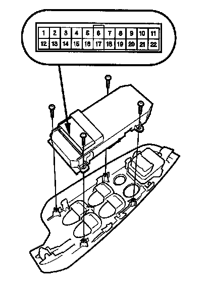
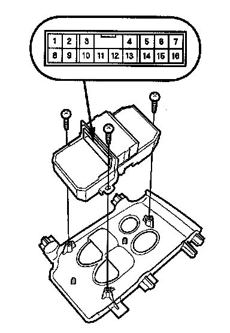
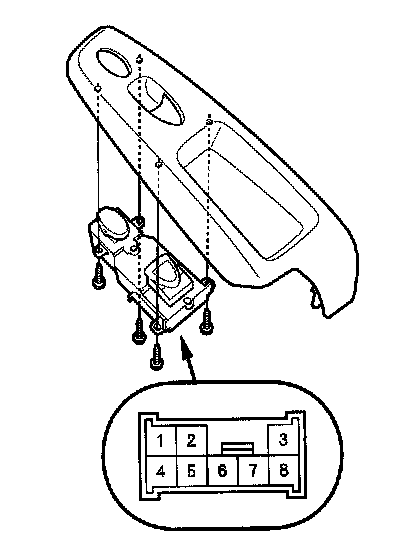

Door Lock Switch Test
Door Lock Switch TestDriver's door (4-door)

1. Remove the power window master switch and disconnect its connector.
2. Check for continuity between the power window master switch 22P connector terminals.
- There should be continuity between the No. 11 and No. 17 terminals when the door lock switch is in the LOCK position. (With security)
- There should be no continuity between the No. 11 and No. 17 terminals when the door lock switch is in the UNLOCK position. (With security)
- There should be continuity between the No. 11 and No. 19 terminals when the door lock switch is in the UNLOCK position.
- There should be no continuity between the No. 11 and No. 19 terminals when the door lock switch is in the LOCK position.
3. If the continuity is not as specified, replace the power window master switch.
Driver's door (2-door)

1. Remove the power window master switch and disconnect its connector.
2. Check for continuity between the power window master switch 16P connector terminals.
- There should be continuity between the No.5 and No.7 terminals when the door lock switch is in the LOCK position. (With security)
- There should be no continuity between the No.5 and No.7 terminals when the door lock switch is in the UNLOCK position. (With security)
- There should be continuity between the No.6 and No.7 terminals when the door lock switch is in the UNLOCK position.
- There should be no continuity between the No.6 and No.7 terminals when the door lock switch is in the LOCK position.
3. If the continuity is not as specified, replace the power window master switch.
Front passenger's door

1. 4-door: Remove the front passenger's window switch. 2-door: Remove the passenger's power window switch.
NOTE: The illustration shows the 4-door front passenger's door.
2. Check for continuity between the front passenger's power window switch 8P connector terminals.
- There should be continuity between the No.1 and No.2 terminals when the door lock switch is in the LOCK position.
- There should be no continuity between the No.1 and No.2 terminals when the door lock switch is in the UNLOCK position.
- There should be continuity between the No.2 and No.6 terminals when the door lock switch is in the UNLOCK position.
- There should be no continuity between the No.2 and No.6 terminals when the door lock switch is in the LOCK position.
3. If the continuity is not as specified, replace the front passenger's window switch.